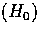
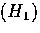
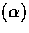
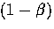

Next: The 2x2 Decision Paradigm
Up: Review on Hypothesis Testing
Previous: Review on Hypothesis Testing
- Null Hypothesis

- A maintained hypothesis that
is held to be true unless sufficient evidence to the contrary is presented.
This maintained claim usually carries some form of significance or
importance .
- Alternative Hypothesis

- A hypothesis that is
held to be true when the null hypothesis is rejected.
- Simple Hypothesis
- A hypothesis that specifies a single value for a
population parameter of interest.
- Composite Hypothesis
- A hypothesis that specifices a range of values
for a population parameter of interest.
- One-sided Alternative
- An alternative hypothesis involving all
possible values of a population parameter on either one side or the other of
the value specified by a simple null hypothesis.
- Two-sided Alternative
- An alternative hypothesis involving all
possible values of a population parameter other than the value specified by
a simple null hypothesis.
- Type I Error
- The mistake of rejecting a true null hypothesis.
- Type II Error
- The mistake of accepting a false null hypothesis.
- Significance Level

- The probability of
rejecting a true null hypothesis. This is usually kept at a lower value
closer to zero.
- Power

- The probability of rejecting a false
null hypothesis. This is determined by both the chosen
 level and
the testing procedure.
level and
the testing procedure.
- p-value / probability value
- The smallest significance level at
which a null hypothesis can be rejected. Alternative, one can think of it as
the level of significance when the evidence is used as a critical
value.
Next: The 2x2 Decision Paradigm
Up: Review on Hypothesis Testing
Previous: Review on Hypothesis Testing
Roger Koenker
9/3/1997